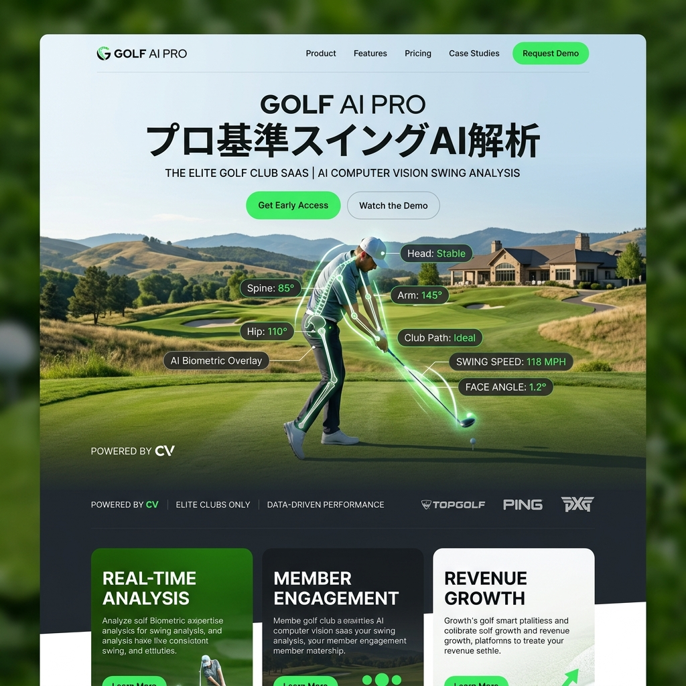

あなたのスイングを、
1秒で「数学」にする。
高価なセンサー機器はもう不要です。スマホのカメラで撮影するだけで、AIが骨格の動き、クラブ軌道、ヘッドスピードをミリ単位で3D解析。SWING-METRICSは、すべてのゴルファーにプロレベルのバイオメカニクスを提供する究極のコーチング・プラットフォーム。

「レッスンプロの勘」への過度な依存
ゴルフの上達を妨げている最大の原因は、「言語の曖昧さ」です。「タメを作る」「もっと粘る」といった感覚的な指導は、人によって解釈が分かれます。真の上達には、客観的で定量的なフィードバックが不可欠です。
スマホ1台で完結する、弾道と骨格の同時解析
マーカーレス3Dモーションキャプチャ
専用のスーツや体に貼るマーカーは不要。背後からスマホで撮影するだけで、AIが関節の動きを24のポイントでトラッキングし、3Dモデル化します。
キネマティック・シーケンス分析
骨盤、胸郭、腕、クラブヘッド。それぞれの動く順番とスピードのピーク（運動連鎖）をグラフ化し、プロのデータと重ね合わせて「力のロス」を視覚的に特定します。
インパクトの瞬間を予測するディープラーニング
高速度カメラを使わなくても、スイングの軌道からインパクト時のフェースアングルと打出角を推論し、正確な飛距離とスピン量を計算します。
「なぜスライスするのか」をAIが即座に回答
解析結果は単なる数字の羅列ではありません。「ダウンスイングで右肩が3センチ突っ込んでいるため、アウトサイドイン軌道になっています。このドリルを試してください」と、具体的な原因と修正アクションを動画付きで即座に提示します。
過去の自分との「ゴースト対戦」
1ヶ月前のスイングと、今日のスイング。2つの3Dモデルを重ね合わせて再生（ゴースト再生）することで、フォームの改善度合いが一目瞭然になります。「直っているつもり」という錯覚を完全に排除します。
Case Study | 万年100切りのアマチュアゴルファー
5年間スクールに通ってもスコア100の壁を越えられなかったユーザー。SWING-METRICSで解析した結果、「切り返しでの骨盤の回転不足」が根本原因だと発覚。AIが提案したストレッチと専用ドリルを2週間実践したところ、次回のラウンドで一気に80台を記録しました。
誰もが、自分の「専属コーチ」を持つ世界
スポーツにおける「才能」の正体は、効率的な体の動かし方を知っているかどうかです。私たちはAIの力でその暗黙知を解読し、すべての人が最高のパフォーマンスを発揮できる世界を目指します。